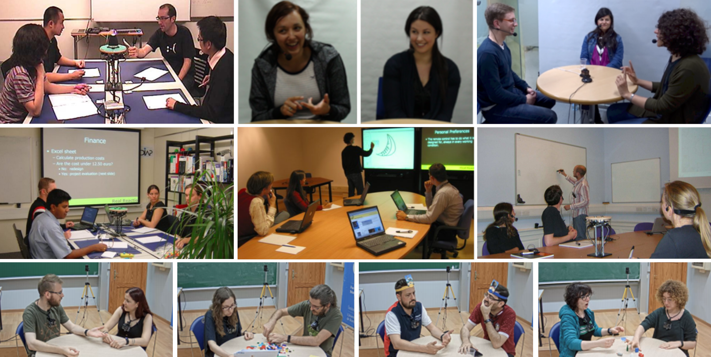
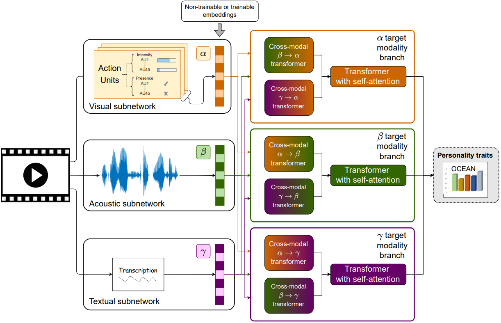
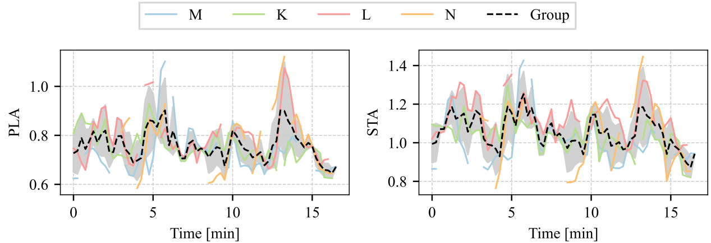
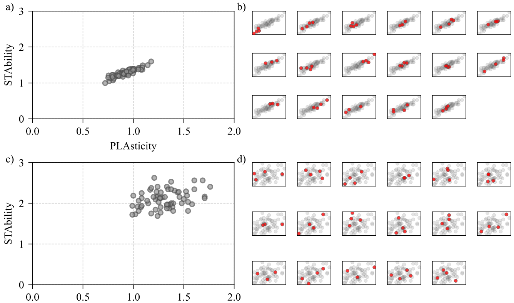

Kristian Fenech, Ádám Fodor, Sean P. Bergeron,
Rachid R. Saboundji, Catharine Oertel, András Lőrincz

Dyadic and small group collaboration is an evolutionary advantageous behaviour and the need for such collaboration is a regular occurrence in day to day life. In this paper we estimate the perceived personality traits of individuals in dyadic and small groups over thin-slices of interaction on four multimodal datasets. We find that our transformer based predictive model performs similarly to human annotators tasked with predicting the perceived big-five personality traits of participants. Using this model we analyse the estimated perceived personality traits of individuals performing tasks in small groups and dyads. Permutation analysis shows that in the case of small groups undergoing collaborative tasks, the perceived personality of group members clusters, this is also observed for dyads in a collaborative problem solving task, but not in dyads under non-collaborative task settings. Additionally, we find that the group level average perceived personality traits provide a better predictor of group performance than the group level average self-reported personality traits.

Illustrative sample of the temporal changes in the perceived personality meta-traits of plasticity (left) and
stability (right).
Coloured curves: Trait estimation for individual participants, where each participant is assigned a
letter in place of a name for anonymisation in the dataset.
Missing line segments: non-speaking intervals.
Dashed
line: average over participants.
The grey shaded area gives the standard deviation of the individual values.
Perceived
personality tend to move together over time.

On the following figure stability and plasticity values are visualized.
a) First-impression personality state averaged over the full session duration.
b) Each subplot shows the original averages as seen in a). Traits corresponding to the members of other group are
highlighted by the red circles.
c) Plasticity and stability determined from self reported big-five traits, re-scaled between
0 and 1.
d) Each subplot shows the original averages as seen in c). Traits corresponding to the members of other group
are highlighted by the red circles.
The observed group effect is strong in the first-impression personality state.

If you found our research helpful or influential please consider citing:
@misc{fenech2022perceived,
title = {Perceived personality state estimation in dyadic and small group interaction with deep learning methods},
author = {Kristian Fenech and Ádám Fodor and Sean P. Bergeron and Rachid R. Saboundji and Catharine Oertel and András Lőrincz},
year = {2022},
eprint = {2211.04979},
archivePrefix = {arXiv},
primaryClass = {cs.HC},
doi = {10.48550/arXiv.2211.04979}
}